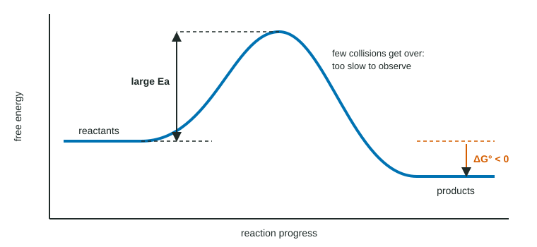

Topic 9.3 gave a test for whether a process is thermodynamically favored: ΔG° < 0. It is tempting to read "favored" as "happens". This page is about why that is wrong, and why a favored process can sit unchanged for years.
Two questions, two answers
Chemistry asks two separate questions about any reaction:
- Can it go on its own? Thermodynamics answers this with ΔG°. It compares only the start and the end: the free energy of the reactants and of the products.
- How fast does it go? Kinetics answers this with the rate, which depends on the activation energy, Ea, and the temperature (Unit 5). It depends on the path between start and end.
Because ΔG° and Ea describe different things, any combination is possible: favored and fast, favored and slow, not favored at all.
Favored but too slow to see

In Figure 1 the products lie below the reactants, so ΔG° < 0. But to get there the particles must climb a very tall barrier. At room temperature only a tiny fraction of collisions have that much energy (the far tail of the Maxwell-Boltzmann distribution), so the rate is negligible. A reaction like this is said to be under kinetic control, and the reactants are kinetically stable even though they are not thermodynamically stable.
Familiar examples:
| Process | ΔG° at 298 K | What you see |
|---|---|---|
| C(diamond) → C(graphite) | −2.9 kJ/mol | Diamonds last for billions of years. |
| 2 H2(g) + O2(g) → 2 H2O(l) | −474.2 kJ/mol | The gases can be mixed safely until a spark is added. |
| Paper (cellulose) + O2 → CO2 + H2O | very negative | Books sit on shelves for centuries. |
| Iron + O2 + water → rust | negative | Rust forms, but over weeks or years. |
Starting a reaction under kinetic control
Three things can make a kinetically stable mixture react, and none of them changes ΔG°:
- A spark or flame gives some molecules enough energy to cross the barrier. If the reaction is exothermic, the heat it releases lifts more molecules over, and the reaction keeps itself going. That is why a gas stove needs a spark only once.
- Heating raises the fraction of collisions with energy above Ea.
- A catalyst (topic 5.11) provides a new pathway with a lower barrier. Enzymes do this in your cells: glucose and oxygen react with ΔG° = −2870 kJ/mol, yet sugar in a bowl does not burn. Enzymes lower the barriers so the same overall reaction runs at 37 °C.
Worked example (reasoning). A student mixes two clear solutions and sees no change after an hour. Can the student conclude that ΔG° > 0?
No. "No visible change" fits two different situations: the reaction is not favored (ΔG° > 0), or it is favored but has a large activation energy (kinetic control). To decide, the student needs ΔG° from data, such as ΔH° and ΔS°, or ΔG°f values. Watching the beaker only tells you about the rate.
When two products compete
Sometimes one starting material can form two products. The product with the lower barrier forms faster; the product with the more negative ΔG° is more stable. If they are different, a short reaction at low temperature gives mostly the fast product, and a long reaction at higher temperature, where the larger barrier can be crossed, gives more of the stable one. Which product you get is decided by kinetics or by thermodynamics depending on the conditions.
Writing it up
When asked why a favored reaction is not observed, the answer has two parts: (1) ΔG° < 0, so the reaction is thermodynamically favored; (2) the activation energy is so large that very few collisions have enough energy to react at this temperature, so the rate is too small to observe. An answer that says "ΔG° is positive" or "the reaction is at equilibrium" misses the point.